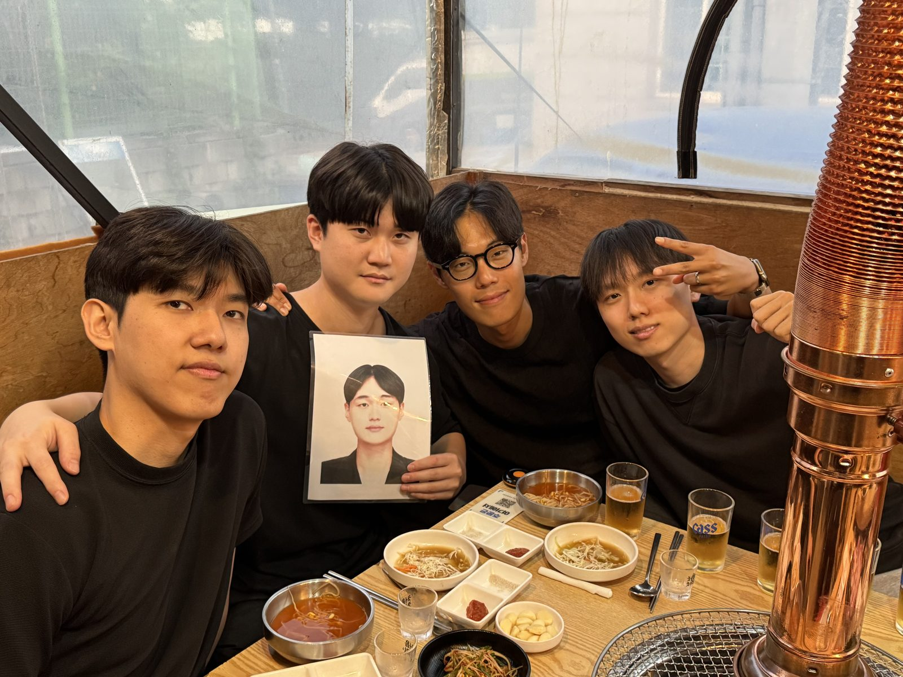

Weekly Drinking Promotion
Association (WDPA)
입력 : 2026년 8월 13일

김성민 해외지부 운영총괄 텍사스 출국 전 핵심 운영진 회동 현장 / 사진=WDPA
매주술권장협회 핵심 운영진이 13일 경기 용인시 동천동 일대에 집결해 미국 텍사스 복귀를 앞둔 김성민 해외지부 운영총괄과의 마지막 공식 회동 일정을 시작했다.
이번 일정에는 김성민 해외지부 운영총괄을 비롯해 허근영 전무이사, 정철현 감사, 송병완 상무이사, 최민규 상근부회장이 참석했다.
한창희 협회장은 개인 일정으로 인해 현장 참석이 어려워지면서 아쉽게 불참했다. 다만 운영진은 한 협회장의 사진을 현장에 함께 배치하는 방식으로 공백을 최소화하며 사실상 ‘완전체급’ 회동 체제를 구축한 것으로 알려졌다.
이날 첫 공식 일정 장소로 선정된 곳은 경기 용인시 동천동에 위치한 육류 전문 레스토랑 ‘황소고집’이었다.
황소고집은 평소 지역 맛집 탐방과 음식점 발굴에 상당한 관심을 보여온 송병완 상무이사가 직접 선정한 곳으로, 협회 내부에서 그의 미식 평가체계를 일컫는 이른바 ‘병슐랭 가이드’에 공식 등재된 식당으로 알려져 있다.
협회 관계자는 “병슐랭 가이드는 별도의 전문 심사위원단이나 객관적인 평가 기준이 존재하지 않는다”면서도 “송 상무이사가 맛있다고 하면 대체로 맛있었던 만큼 운영진 내부 신뢰도는 상당히 높은 편”이라고 설명했다.
운영진은 송 상무이사의 안내에 따라 테이블에 착석한 뒤 고온 화력에 육즙을 가둔 돼지고기와 각종 곁들임 메뉴, 대한민국 회합 문화의 핵심 액체자산인 소주 등을 차례로 배치하며 본격적인 일정을 시작했다.
평소 같았다면 음식과 술을 중심으로 비교적 활기찬 분위기가 이어졌겠지만 이날만큼은 다소 다른 기류가 감지됐다.
김성민 해외지부 운영총괄이 다시 미국 텍사스로 떠나기 전 핵심 운영진이 사실상 마지막으로 함께하는 자리였기 때문이다.
참석자들은 평소처럼 농담을 주고받으며 고기와 술을 양껏 섭취했지만, 대화 중간중간 김 총괄의 출국과 향후 일정에 대한 이야기가 자연스럽게 이어지면서 회동 내내 묘한 아쉬움이 감돌았던 것으로 전해졌다.
한 참석자는 “평소와 똑같이 먹고 마시고 웃고 있었는데 오늘이 지나면 당분간 이렇게 모이기 어렵다는 생각이 계속 들었다”며 “그래서인지 평소보다 한잔 한잔이 조금 다르게 느껴졌다”고 말했다.
이날 현장에서는 김 총괄의 텍사스 복귀를 앞두고 특별 제작된 기념품 전달식도 진행됐다.
최민규 상근부회장은 직접 커스텀 디자인한 휴대전화 케이스를 김 총괄에게 전달했다.
해당 케이스는 시중에서 판매되는 일반 제품이 아닌 김 총괄을 위해 별도로 디자인된 단독 제작품으로, 향후 수천㎞ 떨어진 텍사스 현지에서도 협회와 운영진을 떠올릴 수 있도록 하는 일종의 휴대형 우호증진 기념물 성격으로 제작된 것으로 알려졌다.
협회 관계자는 “크기는 휴대전화 한 대 수준이지만 담겨 있는 외교적 의미는 그보다 훨씬 크다”며 “향후 텍사스 현지에서 협회 인지도를 유지하는 데에도 일정 부분 기여할 것으로 기대한다”고 평가했다.
선물 전달 이후에도 운영진은 고기와 소주를 추가하며 회동을 이어갔다.
그러던 중 식사가 마무리 단계에 접어들 무렵 예상하지 못한 상황이 발생했다.
송병완 상무이사가 돌연 이날 황소고집에서 발생한 비용 전액을 자신이 부담하겠다는 의사를 밝힌 것이다.
갑작스러운 전액 결제 선언에 참석자들은 놀라움을 감추지 못했으며, 몇 차례 사실관계를 재확인한 뒤 송 상무이사의 결제 의사를 받아들인 것으로 전해졌다.
그러나 문제는 결제 선언 직후 발생했다.
현장에 있던 한 참석자가 곧바로 “그럼 지금부터 소주 말고 복분자주 시켜도 되느냐”고 문의하면서, 비용 부담 주체가 변경되자마자 주류 소비 수준을 상향 조정하려는 움직임이 포착된 것이다.
협회 관계자는 “송 상무이사의 발언이 나온 지 채 얼마 지나지 않은 시점이었다”며 “재정지원 확대가 소비심리에 얼마나 빠르게 영향을 미칠 수 있는지를 보여준 대표적인 사례”라고 평가했다.
다행히 현장에서 대규모 복분자주 추가 발주는 이뤄지지 않은 것으로 알려졌으며, 운영진은 기존 주류 체계를 유지한 채 식사를 마무리했다.
한 현장 관계자는 “병슐랭 가이드 등재 식당을 직접 선정한 데 이어 해당 식당의 비용까지 부담했다”며 “맛집 선정부터 예산 집행까지 원스톱으로 책임지는 보기 드문 행정력을 보여줬다”고 말했다.
운영진은 송 상무이사의 전격적인 재정 지원 속에 황소고집에서의 1차 공식 일정을 성공적으로 마쳤다.
다만 이날 일정은 여기서 끝나지 않았다.
황소고집을 빠져나온 핵심 운영진은 김성민 해외지부 운영총괄의 텍사스 출국 전 마지막 밤을 이대로 종료할 수 없다는 데 뜻을 모으고 장소를 옮겨 후속 일정을 이어간 것으로 확인됐다.
협회 내부에서는 김 총괄의 출국이 임박한 만큼 이날부터 사실상 해외파견 최고 수준의 비상 대응체계인 ‘데프콘 1(DEFCON 1)’에 준하는 송별 체제가 가동된 것 아니냐는 평가도 나오고 있다.
협회 관계자는 “황소고집 일정은 이날 전체 일정의 시작에 불과했다”며 “이후 진행된 2·3차 일정에 대해서는 별도의 기록을 통해 공개할 예정”이라고 밝혔다.
〈특집②에서 계속〉